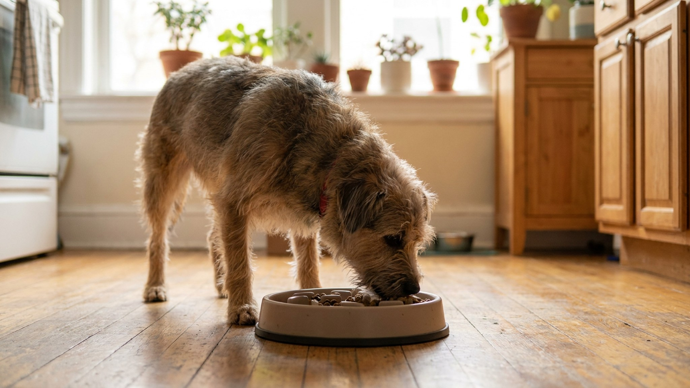

Миска опустела за 20 секунд, собака отошла, громко рыгнула и залегла с раздутым животом. Знакомая картина? Торопливое поглощение еды — не просто «аппетитно», это источник реального дискомфорта: воздух в желудке, тяжесть, иногда срыгивание. А у крупных глубокогрудых пород быстрое питание создаёт повышенную нагрузку на пищеварительную систему. Пять способов, которые работают — без стресса для собаки.
🐾 Питомец ведёт себя странно?
AnimaLife расшифрует поведение кошки и собаки и подскажет, что делать. Попробуйте бесплатно прямо в мессенджере.
Дикий предок домашней собаки ел быстро по двум причинам: конкуренция в стае за еду и риск, что добычу отнимут. Чем быстрее съел — тем больше твоё. Этот инстинкт сохранился, даже если единственный «конкурент» — это вторая собака в доме, которая мирно лежит в другой комнате.
Добавьте к этому тревогу: собаки, которые беспокоятся о том, «дадут ли ещё», едят быстрее. Это часто встречается у питомцев из приютов, собак, переживших период нехватки еды, и щенков из больших помётов, где за едой действительно нужно было торопиться.
Ещё один фактор — тип кормления: если хозяин даёт еду нерегулярно или собака никогда не знает, когда будет следующий приём пищи, она будет есть быстро при любой возможности. Предсказуемый режим питания сам по себе снижает тревогу и скорость еды.
Аэрофагия — заглатывание воздуха вместе с едой. При быстром питании собака не успевает жевать: гранулы или куски проглатываются вместе с большим количеством воздуха. Результат: вздутие живота, дискомфорт, урчание, иногда срыгивание непереваренной еды вскоре после кормления.
У крупных и глубокогрудых пород (лабрадоры, ретриверы, немецкие овчарки, доберманы, бернские зенненхунды, ирландские сеттеры, мастифы) быстрое питание с большим объёмом воздуха создаёт повышенный риск состояния, при котором требуется срочный осмотр ветеринара. Это медицинская ситуация, и задача владельца — снизить вероятность её развития через режим и способ кормления.
Ветеринары рекомендуют крупным породам: медленное питание, две-три небольшие порции вместо одной большой и не допускать активной физической нагрузки в течение часа после еды.
Самый простой и эффективный старт. Миски-лабиринты (slow feeder bowls) имеют перегородки, выступы или лабиринтные узоры внутри — собака вынуждена обнюхивать и доставать еду из ячеек, а не просто сметать её языком.
Исследования показывают, что медленные миски увеличивают время приёма пищи в 5–10 раз по сравнению с обычной. Это не только снижает аэрофагию, но и даёт собаке больше ментальной нагрузки — она работает за еду.
Выбирая медленную миску, учитывайте: размер ячеек должен соответствовать размеру морды собаки. Очень мелкие ячейки для крупной породы вызовут фрустрацию, а не замедление.
Нюхательный коврик (snuffle mat) — это коврик с плотными «лапшинами» из флиса или резины, в которые прячут сухой корм или лакомства. Собака ищет еду носом, вытаскивает по кусочку — и это занимает от 10 до 30 минут вместо 30 секунд.
Дополнительный бонус: поиск еды носом — это природное поведение, оно успокаивает. Активный сниффинг снижает частоту сердечных сокращений и уровень стресса у собаки. Кормление на snuffle mat после прогулки даёт двойной эффект: насыщение и расслабление.
Сделать можно самостоятельно: нарезать флис полосками и завязать в ячейки резинового коврика с дырками — стандартный DIY, множество видеоинструкций в открытом доступе.
Если сейчас кормите раз в день — переходите на два кормления: утро и вечер. Если два — можно добавить небольшой дневной приём. Тот же суточный объём, поделённый на меньшие порции, физически ограничивает количество еды за раз и снижает нагрузку на желудок.
При двухразовом кормлении собака меньше «голодает» между приёмами, соответственно — меньше тревожится о еде и ест чуть спокойнее. Это работает в связке с другими способами, а не вместо них.
Часть суточной нормы корма (треть или половина) давайте не из миски, а за выполнение команд или в ходе обучающих упражнений. Собака «зарабатывает» еду по одной грануле или небольшими горстями — скорость поглощения автоматически падает.
Это особенно эффективно для щенков и молодых собак: они одновременно учатся, получают ментальную нагрузку и едят медленно. Плюс — тренировочные сессии за обычный корм значительно снижают расходы на лакомства.
Рассыпьте суточную порцию корма по газону на прогулке, по нюхательному ковру или спрячьте в нескольких небольших ёмкостях по квартире. Собака ищет еду — и не может физически схватить всё сразу. Это «кормовое обогащение среды», рекомендуемое поведенческими специалистами для большинства домашних собак.
Ещё вариант: кормить из Kong или другой игрушки-наполнителя. Влажный корм или паштет загружается внутрь, собака вылизывает. Занимает от 5 до 20 минут в зависимости от сложности наполнения.
🐾 Здоровье питомца под контролем
AI-ветеринар, дневник здоровья и персональные советы для вашего питомца — установите AnimaLife бесплатно.
🐾 Понравился разбор?
Подпишитесь на канал — каждый день разбираем по одному тревожному симптому у кошек и собак: что в пределах нормы, а когда пора к врачу. Подпишитесь, чтобы не пропустить разбор, который может спасти здоровье вашего питомца.
Быстрое питание + вздутие живота после еды — это поведенческая проблема, решаемая описанными выше способами. Но есть ситуации, требующие ветеринарного осмотра:
Замедление кормления — одна из самых простых профилактических мер для здоровья крупной собаки. Вложение в медленную миску или snuffle mat окупается спокойствием хозяина и комфортом питомца.
Материал носит информационный характер и не заменяет очную консультацию ветеринара.